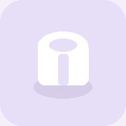

可修改节点名称、添加同级新学科、添加子节点或删除分支。
正在加载正式规范题库…
本地永久保存错误记录与复盘心得。手机端左滑记录即可显示“修改 / 删除”。
低熟悉度知识点会在间隔后自动进入这里，优先处理低分和久未复习内容。
记录知道但无法完整复述的知识点。手机端左滑记录即可显示“修改 / 删除”。
这里只统计已经完成过五题回忆的知识点。每次回忆都会留下历史记录。
五题平均分会转换为百分制。历史记录不会被新一次回忆覆盖，因此可以观察“记住 → 遗忘 → 再记住”的变化。